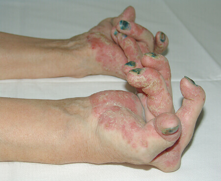

Știri despre sănătate
Dr. Sorin Petrescu: PSORIAZISUL SE POATE DE ÎNVINS! SALVAȚI APROPIAȚII DVS. EI SUNT ÎN PERICOL!

Mult timp s-a considerat că psoriazisul este doar una dintre bolile pielii, care se pretează la o stabilizare reușită și nu reprezintă nici-un pericol. Dar în ultima vreme statisticile arată că psoriazisul este cauza bolilor grave în masă. Și chiar dacă situația cu boala se dovedește a se stabiliza din punct de vedere al semnelor externe, atunci în interiorul organismului procesele negative continuă.
În general vorbind, chiar dacă se primește de eliminat semnele psoriazisului pe exterior și de adus pielea în ordine - în interiorul organismului boala continuă sa devoreze sistemul autoimun care provoacă boli grave, dintre care multe sunt fatale. Mai ales de temut este faptul că psoriazisul este capabil să provoace tumori canceroase.
Leziunea cutanată la psoriazis: comparație
Cauzele patologiei până în prezent nu au fost dezvăluite pe deplin. Printre posibilele cercetători numesc:
- natura autoimună,
- factorul genetic,
- tulburări ale proceselor metabolice,
- tulburări neurologice.
De asemenea, una dintre cauzele presupuse poate fi stresul, bolile infecțioase, malnutriția, consumul de alcool, trăirea într-un climat continental, imunitatea redusă și traumatismele cutanate.

Psoriazisul se poate manifesta la orice vârstă, iar în ceea ce privește sexul pacienților cei mai afectați de această boală, aici se poate spune că șansele bolii sunt egale atât pentru bărbați, cât și pentru femei.
Boala devine periculoasă deja în 1-2 ani de la apariție. Faza critică a psoriazisului ajunge peste 3-4 ani și de atunci, în orice moment, poate duce la una dintre bolile mortale sau la dizabilitate. Așa sau altfel, peste 5-7 ani, psoriazisul duce cel mai adesea la schimbări ireversibile în organism. Iar absența tratamentului psoriazisului în sine - în cele din urmă, pur și simplu ucide pacientul.
Cele mai frecvente locuri pentru apariția plăcilor psoriazice
Din păcate, în spitale, la momentul dat, nu sunt atât de mulți experți care ar putea trata pe deplin psoriazisul. Majoritatea medicilor se țin de o tradiție învechită de tratare a bolii, care doar maschează problema, dar nu o vindecă.
Există clinici specializate și centre medicale, care se ocupă cu tratarea pacienților cu psoriazis. Dar există multe tratamente, care sunt practic inaccesibile pentru majoritatea pacienților. Prețul unui curs complex poate fi de până la 2000 de dolari.
Mijlocul unic care, la momentul actual este disponibil pentru a fi utilizat independent de către pacienții cu psoriazis - este gelul special împotriva psoriazisului „“ Elaborarea, care este capabilă de a elimina cauzele psoriazisului și de a distruge boala în sine ..
Adevărul este că, după ce a apărut pe piață gelul "", am efectuat propriile noastre studii clinice, pe lângă cele efectuate de minister pentru certificare. Datele noastre au coincis cu rezultatele testelor oficiale. Gelul "" afectează cauza principală a bolii, nu numai în eliminarea semnelor de boală, ci și asigurarea siguranței organelor interne, care sunt extrem de vulnerabile la psoriazis.
În afară de România, au fost efectuate studii clinice în Elveția și Germania. Medicii din aceste țări au confirmat pe deplin rezultatele specialiștilor români. Gelul ajută 82% dintre pacienți, distrugând complet boala lor. În restul de 18%, boala se retrage și intră în stadiul ușor, fără a afecta negativ organismul.
De asemenea s-a realizat un studiu care a depășit așteptările noastre:
STUDIUL: Cum ați scăpat de psoriazis?
Preparate medicale:
23%
Gel "":
47%
Medicina tradițională:
8%
Caut o soluție:
17%
Nu cred că aceasta este posibil:
5%
Unde de obținut gelul ""?
La momentul dat, sunt în curs de desfășurare negocieri cu rețelele mari farmaceutice, care nu au condus la nimic. Motivul este destul de prozaic - producătorul încearcă să stabilească un preț minim pentru gel pentru a asigura accesul la numărul maxim de pacienți. În același timp, rețelele farmaceutice, dimpotrivă, doresc o marjă maximă posibilă. Aceasta, la rândul său, va face medicamentul aproape inaccesibil pentru marea majoritate a pacienților.
Dacă vorbim despre situația "chiar acum" - gelul poate fi comandat pe siteul special al producătorului. Este făcut cât mai simplu posibil - este suficient doar pentru a indica numele și numărul de telefon, după care operatorul vă va contacta și va clarifica toate datele. De achitat medicamentul trebuie numai după primire și verificare. Acest lucru este extrem de comod pentru cei care rareori comandă ceva pe Internet.
Cercetări
Rezultatele testelor de laborator ale gelului "" A Institutului de Cercetări Științifice de Dermatologie:
Au fost selectați 100 de voluntari de vârste diferite cu forme severe, ușoare și moderate de psoriazis. Ca urmare a unui studiu de 30 de zile, au fost obținute următoarele rezultate:
1. S-a observat o îmbunătățire a bunăstării întregului grup de subiecți de la 18 la 68 de ani.
2. Peste 15 zile, restabilirea completă a pielii a fost înregistrată la 96% dintre pacienți.
3. Deja peste 25 de zile de la efectuarea testelor, acestea au arătat o îmbunătățire a bunăstării tuturor pacienților.
4. După 30 de zile, 97% dintre pacienți s-au restabilit de la psoriazis, s-au înregistrat îmbunătățiri ai indicatorilor medicali a țesuturilor cutanate.
203 comentarii astăzi
Sorin Petrescu
Nicu, nu este necesar recunoștință, toate acestea sunt în beneficiul cetățenilor români.
Cu respect, Dr. Sorin Petrescu
cu o oră în urmă
Mitruț Toma
Lume, ajutor! Deja am obosit de psoriazis. Pielea se cojește înaintea ochilor mei. Nu știu ce să fac. Iau pilule periodic, dar nu ajută ☹
cu o oră în urmă
Maximilian Turcu
Mitruț,Ia gelul "", nu vei regreta. Însăși am avut probleme, chiar și soția m-a lepădat, mâinile am aplecat deja, nu știam ce să fac. Mulțumesc mamei, că a comandat și m-a forțat să-l cumpăr. De acum nu este nici-un psoriazis, chiar cu soția ne-am împreunat. Crede-mă, ia-l și totul va fi bine, vei vedea.
cu o oră în urmă
Lăcrămioara Olariu
Cum de achiziționat gelul ""?
cu o oră în urmă
Bernard Mihai
Lăcrămioara, Iată link-ul , numai grăbește-te până când este promoție.
cu o oră în urmă
Lăcrămioara Olariu
Mulțumesc, am comandat deja
dar dacă puteți să-mi spuneți cât de mult va dura livrarea către București?
cu o oră în urmă
Bernard Mihai
Ei bine, suntem cu tine dintr-un oraș, așa că aproximativ în 3 zile vor veni)
cu o oră în urmă
Codruț Dan
Popor spuneți-mi, el vă ajută? Ați încercat să folosiți? Căci de la medicamente nici-un folos.
cu o oră în urmă
Maxim Sima
Codruț, da, desigur. Efectul preparatului este foarte puternic, iar cel mai important este că nu dăunează sănătății. Grăbește-te să-l comanzi!
cu o oră în urmă
Sorin Petrescu
Codruț, , luați, numai că urmați instrucțiunile de utilizare.
Cu respect, Dr. Sorin Petrescu
cu o oră în urmă
Silvia Stanciu
Mulțumesc, Sorin Petrescu . Dacă nu ați fi fost, nu aș fi crezut în eficacitatea gelului ""! Am trăit cu psoriazis mai mult de 5 ani și știu ce este. După o săptămână, de ungere a soțului în fiecare seară cu gel am observat în el o schimbare dramatică! Cel mai interesant, nici nu a observat cum a scăpat de psoriazis!
Și coleta a venit foarte repede.
cu o oră în urmă
Sorin Petrescu
În aceasta nu este meritul meu, spuneți mulțumesc oamenilor noștri de știință care au creat în sfârșit acest medicament și l-au pornit în producție.
Cu respect, Dr. Sorin Petrescu
cu o oră în urmă
Varvara Dumitriu
Tatăl îl folosește cu psoriazis. Și imaginați-vă peste 2 săptămâni, mai degrabă astăzi a 16-a zi, nu mai este deja acolo, rezultatul este excelent! Am încercat multe lucruri înainte, dar toate încercările mele s-au ciocnit de faptul că nu a vrut să fie tratat.
57 de minute în urmă
Ștefana Sirbu
Astăzi, tocmai acum am comandat.
Acolo sunt discount-uri, grăbiți-vă!
Pe site-ul oficial am cumpărat, foarte repede au sunat înapoi și comanda fost confirmată.
Vreau să arăt frumoasă)
Acolo sunt discount-uri, grăbiți-vă!
Pe site-ul oficial am cumpărat, foarte repede au sunat înapoi și comanda fost confirmată.
Vreau să arăt frumoasă)
55 de minute în urmă
Ioanina Veres
Eu singură am folosit gelul "". Au început problemele cu sănătatea datorită psoriazisului. Am încercat să tratez fără ajutorul din afară, dar am reușit doar o vreme. Mi-am dat seama că am ajuns la limită când doctorul mi-a spus că dacă nu se va îmbunătăți, inima nu va suporta. După "" a apărut o anumită vitalitate, mă simt mai veselă. Nici măcar nu am observat cum a dispărut psoriazisul!
53 de minute în urmă
Floare Tataru
Rudele mele au folosit "" și, de asemenea, cu succes (sunt soț și soție). Chiar credeam că îi voi pierde, pentru că au pierdut literalmente orice interes în viață. Au fost norocoși că s-au susținut reciproc și amândoi au hotărât ferm să fie vindecați. I-am întrebat, spun că s-au vindecat în genere și nici măcar nu-și amintesc de psoriazis.
48 de minute în urmă
Flora Cretu
Am cumpărat gelul "" părinților mei, mama a dat-o tatei și a putut să-l vindece de psoriazis. Păcat că înainte un astfel de mijloc nu a fost, tatăl a pierdut atâți de mulți ani pentru tratament ...
44 de minute în urmă
Voichița Nicolescu
Sper că "" va salva mama de suferință cu psoriazisul tatălui, ce numai nu am făcut cu ea, am mers chiar la vrăjitoare - nu a ajutat. După "" nu este vizibil deja o lună, sper că așa va continua.
35 de minute în urmă
Gianina Dogaru
De asemenea, voi împărtăși bucuria mea. Am scos soțul din psoriazis, lăsându-l de mai multe ori, m-am întors, gata e omul meu scump. Apoi mi-a nimerit "", am cumpărat multe cu rezervă și am început să ung soțul. Și i-a ajutat! I-am uns 3 săptămâni în fiecare zi și 2 luni de când e sănătos.
31 de minute în urmă
Sorin Petrescu
Gianina, da, înainte psoriazisul era aproape imposibil de vindecat și a fost nevoie de mulți bani, dar acum trecând tratamentul cu preparatul, el poate să scape odată pentru totdeauna de psoriazis.
Cu respect, Dr. Sorin Petrescu
30 de minute în urmă
Alis Cazacu
Oameni, spuneți-mi unde l-ați cumpărat? În farmacii, un astfel de remediu nu se vinde. Nu aș vrea să dau de fals, căci înțeleg că nu va avea nici-un sens.
27 de minute în urmă
Sorin Petrescu
Repet încă o dată, că gelul "" poate fi comandat NUMAI pe site-ul oficial al producătorului, ntru a nu fi confundat, faceți click pe butonul "Treci pe site-ul producătorului" mai jos! Special pentru cititorii noștri există o reducere excelentă de acord comun cu producătorul, însă nu va funcționa prea mult, grăbiți-vă cu comanda !
Și feriți-vă, vă rog, de falsuri.
Cu respect, Dr. Sorin Petrescu
15 de minute în urmă
This product is not intended to diagnose, treat, cure, or prevent any disease. This information does not constitute medical advice and it should not be relied upon as such. Consult with your doctor before modifying your regular medical regime.
Mulțumesc Dr. Sorin Petrescu! Am încercat, a devenit cu adevărat mai ușor. Mă simt bine. Vom vedea cum și ce. E prea devreme să spun, voi scrie mai târziu. Dar mâna nu mai scarpină. Așa sper că totul va reuși!